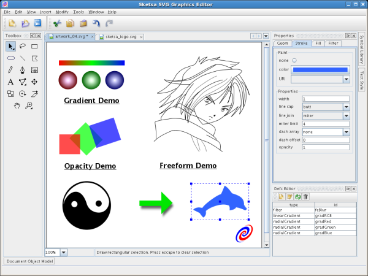
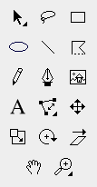
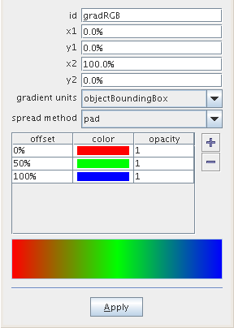

|
Tonny Kohar |
Some weeks ago, the NetBeans team became aware of a cool new application called "Sketsa SVG Graphics Editor". It appeared to have been made in Indonesia, by a team of developers who used the NetBeans Platform as their framework. Here is an interview with the lead developer, Tonny Kohar.
I am Indonesian and currently I live in Surabaya, Indonesia. Before this, I lived in Perth, West Australia, for 4 years, and before that in Singapore for a year.
Currently I work at Kiyut as the project leader for Sketsa SVG Graphics Editor.
Sketsa is an Indonesian word for "sketch". Here are a few screenshots to give you an idea of what we're talking about. This first screenshot, the largest, shows the Sketsa Main Window. In fact, all the windows, tabs, panels, and dockings that you see... are provided by the NetBeans Platform:

These are two close-ups, the first is our "toolbox", inherited from the TopComponent class:

Next, you can see the SVG Gradient Dialog Editor:

The background is the SVG Spec 1.0! It provides for a lot of XML, because that's what SVG uses, but there is no application that allows the designer to build SVG content or art work visually, using a drag-and-drop approach similar to a drawing application.
The target audience for Sketsa are designers or web developers looking for an easy-to-use cross-platform SVG Graphics Editor. We're trying to provide solutions to graphics designers so they can create SVG content without requiring any technical SVG or XML knowledge. We also support the advanced user with an integrated DOM Editor and SVG source editor.
Sketsa runs on any platform that support Java 1.5 / 5.0 (http://www.java.com/getjava) or higher. For example, Microsoft Windows, Unix/Linux, etc. "Java" means write once and run anywhere. This technology developed by Sun includes byte code and a virtual machine that allow truly cross-platform applications. "Write once, run anywhere" is a genuine reality.
Sketsa 4.0 was the first product release that built on top of the NetBeans Platform. It was released back in 31 January 2007. Now, we are at Sketsa 4.1.0, which was released 7 February 2007.
Yes, it is a commercial product. However, you can download a trial version, so people can try before buying. The trial is full-featured, no function is disabled, and there is no time limit on the evaluation version. However, it clearly displays the text "For Evaluation Use Only". You can download it here.
In the commercial sector, there is Adobe Illustrator and Corel Draw, which allow import and export of SVG Content. In the open source area, there is Inkscape. There are also other XML text editor applications and other drawing applications that allow export to SVG.
All of the abovementioned products are well known, feature-packed, powerful, and very respectable products. But we differ with them in the ways that we handle SVG content. Currently, Sketsa is the only SVG Graphics Editor out there which produces clean SVG code. In other words, it does not embed any proprietary SVG XML tags. In addition, our decision to use Java shows that Sketsa is one of the best cross-platform SVG Graphics Editors.
Besides that, our decision to build on top of the NetBeans Platform provides the opportunity for third parties, either commercial or open source, to very easily extend the editor with new functionality and features.
We created an SVG Editor API. For the SVG API itself, there is already excellent Apache Batik SVG API, which we used in Sketsa. Our SVG Editor API mainly contains our canvas, together with various tools to interact with the canvas.
The SVG Editor API is released with Sketsa, which is available at http://kiyut.com/products/sketsa/index.html under the download section. The downloaded Sketsa application contains the Editor API ready for use. It contains the following, based on the NetBeans Platform that comes with NetBeans IDE 5.5:
To use it, simply open NetBeans IDE and use the NetBeans Platform Manager to specify that download as your platform, and then follow the wizard. Then you can start to utilize the Sketsa SVG Editor API.
The Javadoc is available at http://kiyut.com/products/sketsa/developer/index.html.
We've been working on this for 4 years, in a team of developers. Our development team consists of 3 people. My task was to make sure the project runs smoothly and I am also the integrator. I took the SVG Editor API and integrated that API into Sketsa as an application, using the NetBeans Platform. The other developers created the SVG Editor API, which I integrated into Sketsa.
For this reason, NetBeans IDE is our favorite Java editor; in fact, all our developers use NetBeans IDE, because of the NetBeans IDE free-form Ant project type. Three different people with different characteristics... we needed to ensure that the IDE we used supported us in this kind of heterogeneous environment. That's what the free-form Ant project does for us.
Initially, Sketsa was developed using an in-house framework and a third party library for the plugin framework. However, at some point we realized that we were spending more time on developing the framework than adding features to our application. We had become distracted from our main focus, which should have been our SVG Graphics Editor application. Our other focus should have been our SVG Editor API, intended for use by other developers. This in-house framework took a lot of resources to create and maintain and ultimately it would only be able to benefit us—it was unusable outside the project, because it had far too many hardcoded assumptions specific to our own application.
When the buzzword "RCP" come out one or two years ago, we started evaluating the available RCPs. At that time, we didn't know that the NetBeans Platform was available, because to us there was only NetBeans IDE, so naturally we looked at Eclipse RCP. During the evaluation period, we found that Eclipse RCP was too tightly integrated with SWT. In order to fully utilize or derive benefits from Eclipse RCP, we would have had to use SWT to create a Workspace manager, with menus and dialogs, preferences, options, etc. Although we found that we could choose to not use SWT, we found that doing so meant losing the benefits of RCP. It would only have left us with the OSGi modular framework, since the rest of the RCP features, such as the integrated Workspace or Window manager, requires the use of SWT.
What we needed was the whole application framework, including menus, preferences, workspace system, windows and dialogs system, etc, and it had to be Swing because our application is Swing-based. Luckily, not long after that, NetBeans folks started to publicize more heavily the spinning of NetBeans Platform from the IDE.
The NetBeans Platform is the best general purpose application framework out there. The Lookup API concept is really amazing and an eye opener for us. The NetBeans Platform introduces us to a simple, understandable approach to architecting a module-based application. It allow for service (lookup) discovery in plain and simple ways and made us rethink what we had been doing before.
In the sense that we were looking for an application framework that we could build applications on top of, the Lookup API is the "best of breed". Right up till today, it has never stopped amazing us what benefits derive from that Lookup API. It always gives us new ideas on how to write better, even more modular and pluggable, applications. Honestly, we never thought of the Lookup concept before; just after beginning to use the NetBeans Platform did we begin realizing how powerful that API is.
We started using the NetBeans Platform from the second half of 2006. It has been a very nice and pleasing experience to learn how to use the NetBeans Platform. We had some difficulties, but the community at dev@openide.netbeans.org and the NetBeans Developer FAQ easily helped us overcome our problems.
For new developers or existing developers that utilize the NetBeans Platform, I encourage you to learn the Lookup API/SPI. It will save a lot during development and as an added bonus it will change the ways you develop modular, service-oriented applications using provider discovery and consumption in a nice, clean, and simple way.
There is already an excellent set of information available regarding Lookup API/SPI:
Recently we discovered how to provide a dynamically created and extensible JPopupMenu for a non-text editor or custom TopComponent, using the Lookup API. It will be included in Sketsa, in the next release! :)
To create it, in the layer.xml file, declare a menu structure as folders, such as the following:
<folder name="Sketsa">
<folder name="Canvas">
<folder name="Popup">
<attr name="SystemFileSystem.localizingBundle" stringvalue="kiyut.sketsa.Bundle"/>
<file name="org-openide-actions-UndoAction.shadow">
<attr name="originalFile" stringvalue="Actions/Edit/org-openide-actions-UndoAction.instance"/>
</file>
<file name="org-openide-actions-RedoAction.shadow">
<attr name="originalFile" stringvalue="Actions/Edit/org-openide-actions-RedoAction.instance"/>
</file>
<file name="Separator1.instance">
<attr name="instanceClass" stringvalue="javax.swing.JSeparator"/>
</file>
<file name="org-openide-actions-CutAction.shadow">
<attr name="originalFile" stringvalue="Actions/Edit/org-openide-actions-CutAction.instance"/>
</file>
<file name="org-openide-actions-CopyAction.shadow">
<attr name="originalFile" stringvalue="Actions/Edit/org-openide-actions-CopyAction.instance"/>
</file>
<file name="org-openide-actions-PasteAction.shadow">
<attr name="originalFile" stringvalue="Actions/Edit/org-openide-actions-PasteAction.instance"/>
</file>
<file name="org-openide-actions-DeleteAction.shadow">
<attr name="originalFile" stringvalue="Actions/Edit/org-openide-actions-DeleteAction.instance"/>
</file>
<file name="Separator2.instance">
<attr name="instanceClass" stringvalue="javax.swing.JSeparator"/>
</file>
<file name="kiyut-sketsa-actions-CAGUnionAction.shadow">
<attr name="originalFile" stringvalue="Actions/Modify/kiyut-sketsa-actions-CAGUnionAction.instance"/>
</file>
<file name="kiyut-sketsa-actions-CAGSubtractAction.shadow">
<attr name="originalFile" stringvalue="Actions/Modify/kiyut-sketsa-actions-CAGSubtractAction.instance"/>
</file>
<file name="kiyut-sketsa-actions-CAGIntersectAction.shadow">
<attr name="originalFile" stringvalue="Actions/Modify/kiyut-sketsa-actions-CAGIntersectAction.instance"/>
</file>
</folder>
</folder>
</folder>
Next, let's add a MouseListener to one of our Swing components. In our case, we attach it to the TopComponent, which is called canvas.
//Declare the JPopupMenu:
private JPopupMenu popupMenu;
//Define the constructor:
public CanvasTopComponent() {
//Create the JPopupMenu:
createPopupMenu();
//Attach the JPopupMenu in the mouse event's popup trigger:
canvas.addMouseListener(new MouseInputAdapter() {
public void mousePressed(MouseEvent evt) {
if (evt.isPopupTrigger()) {
showPopup(evt);
}
}
private void showPopup(MouseEvent evt) {
popupMenu.show(evt.getComponent(),evt.getX(),evt.getY());
}
});
}
Next, put the following code in the TopComponent, to create the JPopupMenu and build its content from folders in the layer.xml file:
protected void createPopupMenu() {
String folderName = "Sketsa/Canvas/Popup";
FileSystem fs = Repository.getDefault().getDefaultFileSystem();
FileObject fo = fs.getRoot().getFileObject(folderName);
if (fo == null) { return; }
popupMenu = new JPopupMenu();
buildPopup(fo,popupMenu);
}
/** Recursive Build JPopupMenu
*@param fo FileObject as the DataFolder
*@param comp Menu Container eg: JPopupMenu or JMenu
*/
private void buildPopup(FileObject fo, JComponent comp) {
DataFolder df = DataFolder.findFolder(fo);
DataObject[] childs = df.getChildren();
DataObject dob;
Object instanceObj;
for (int i = 0; i < childs.length; i++) {
dob = childs[i];
if (dob.getPrimaryFile().isFolder()) {
FileObject childFo = childs[i].getPrimaryFile();
JMenu menu = new JMenu();
Mnemonics.setLocalizedText(menu,dob.getNodeDelegate().getDisplayName());
comp.add(menu);
buildPopup(childFo,menu);
} else {
//Cookie or Lookup API discovery:
InstanceCookie ck = (InstanceCookie)dob.getCookie(InstanceCookie.class);
try {
instanceObj = ck.instanceCreate();
} catch (Exception ex) {
instanceObj = null;
ErrorManager.getDefault().notify(ErrorManager.EXCEPTION,ex);
}
if (instanceObj == null) {
continue;
}
if (instanceObj instanceof JSeparator) {
comp.add((JSeparator)instanceObj);
} else if (instanceObj instanceof BooleanStateAction) {
JCheckBoxMenuItem menuItem = new JCheckBoxMenuItem();
Actions.connect(menuItem,(BooleanStateAction)instanceObj,true);
} else if (instanceObj instanceof Action) {
JMenuItem menuItem = new JMenuItem();
Actions.connect(menuItem,(Action)instanceObj,true);
comp.add(menuItem);
}
}
}
}
Apart from the fact that its content is loaded from the layer.xml file, the JPopupMenu behaves the same way as any other standard JPopupMenu. Therefore, you could attach the JPopupMenu to any Swing component, such as, for example, a JList, as shown here.
And for a real dynamic JPopupMenu, you could extend the above snippets by leveraging the NetBeans Platform's org.openide.awt.DynamicMenuContent and listening for FileObject changes.
This is very useful for us and maybe other developers who build on top of the NetBeans Platform. This layer.xml approach allows third-party developers, or any other developers, to very easily add their own JPopupMenu entries into a TopComponent in a modular way.
Consider the following scenario. Without the layer.xml approach, if a third-party module wants to add a menu item to the JPopupMenu:
On the other hand, using the layer.xml approach:
And voila, everything will work together automatically.
And, it is important to realize that things increase in complexity when a module is installed or uninstalled during runtime. Using the layer.xml, we only need to listen for changes to the FileObject and then rebuild the JPopupMenu. The runtime module's install or uninstall will then run as expected without additional complicated code for the third party to implement.
This is very similar to the NetBeans Platform's Node popup menu, however the NetBeans Platform's Node popup menu is only applicable to a component derived from the ExplorerManager and to components based on EditorKits, such as text-based or source-oriented editor components. For the custom TopComponent, which is a non-text editor component, as well as projects without Nodes or DataNodes, this is a powerful approach that one can take.
By the way, if the NetBeans Platform could have the above snippets as utility methods, that would be great. As a result, others would not need to always create the functions createPopup() and buildPopup() by themselves. They'd just call them from a NetBeans utilities class, which would do the parsing of the XML Layer content similar to what my code does above.
Well, specifically the following areas:
The Documentation.
The NetBeans Platform APIs.
The NetBeans IDE is one of the best Java IDEs we have ever used, especially the free-form Ant project type. It does not dictate how we should develop our applications. Instead, it supports us, rather than forcing us to follow the IDE-way of doing things. It lets us do things the way we like doing them. The free-form Ant project type is the best project container we have ever seen.
Some tips for other Java IDE users... firstly, you really need to try the free-form Ant project type! You will not want to go back to your previous IDE. NetBeans IDE has excellent support for developing Java applications in the way you prefer doing it, so that you are not forced to follow the IDE's conventions.
In NetBeans IDE, the free-form Ant project is our favorite feature, while in the NetBeans Plaform, we like the Lookup API/SPI most of all.
With more widespread use of SVG, both in the desktop and mobile areas, there are increasingly more unexplored opportunities for SVG authoring tools such as ours.
In the short term, we will keep updating Sketsa with features, bug fixes, and more migrations of the existing in-house framework for the further utilization of the NetBeans Platform. In the long term, we are looking forward to the SVG Spec 1.2 and JSR 226.
JSR 226 is a combination of SVG Tiny and Java technology code. JSR 226 API opens the door to interesting applications that adapt to the varying display sizes and resolutions of mobile devices. We are looking forward to being able to produce JSR 226-compliant SVG code with Sketsa and to thinking about how we could interact with Java SVG API as described in JSR 226.
I usually check the following links for updates relating to Java in general:
{kind=link}